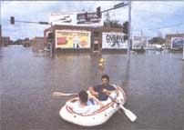
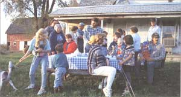
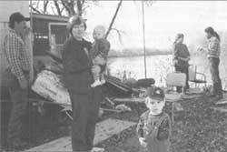

EARTH DAY
Michelle Silver
MOTHER finds out how Midwestern subscribers are faring after the great flood.
For much of the country, the Great Flood of '93 is out of sight, out of mind. Headlines dropped from front pages as newspapers and magazines moved onto fresher, more timely tragedies. But throughout the Midwest, thousands are still struggling to get back on their feet:
More than 73,000 homes, 23 million farm acres, and $10 billion worth of damage has been done. Concerned about our subscribers who live in the nine states hit by the flood: Kansas, Missouri, North Dakota, Iowa, South Dakota, Illinois, Nebraska, Minnesota, and Wisconsin - MOTHER called a number of them to find out how they were faring.
For some the flood meant a week without showering; for others it meant the loss of their home, their income, and virtually all of their personal belongings. While their stories varied dramatically, most subscribers had little faith in the federal government's ability to help them out but a strong dedication to their community as a powerful resource. Despite the amount of devastation that occurred, not one of them had any intention of moving away from their town.
Below are the stories of three subscribers who have been busy cleaning up the damage and continuing to move forward. To all our recovering readers: we wish you luck and hope to hear how you're doing.
Merry Anne Burrier of Leighton, Iowa
Merry Anne Burrier lives in the Des Moines River Valley of Leighton, Iowa, about 3/4 of a mile from the river. She's used to having water seep into her basement and wasn't worried when it started flooding the room this summer. While the sump pump that she and husband George kept there worked for a while, the water eventually climbed so high that Merry Anne was sure the basement walls would cave in. To equalize the pressure, they pulled the pump out and let the room fill. When it finally stopped, almost five feet of water had settled in the basement.
Two weeks later, Merry Anne woke up to find the river in her backyard 50 feet from her house and fast approaching. Worried that the main floors of her house and barn would be flooded, she and George started moving household items to her parents' house, two miles away.
"I didn't want to be woken up at 2 A.M. by someone telling us we had to get out right away and that we could take our kids and nothing else," says Merry Anne.
Fortunately the flooding never entered the main floor of her house, and while water surrounded her barn, the inside remained dry. According to Merry Anne, her neighbors got it much worse. Several summer cabins and trailers around the river were completely washed away, and during the first week of July, one of her neighbor's houses down the road was surrounded by water.
Six or seven families in the neighborhood immediately came to their aid, spending an entire night moving the neighbors' grain off the ground and onto large trucks and bringing the cattle up on top of the hill behind the house. They helped the family move into their trailer on top of the hill across the street from Merry Anne's house, where they lived until it was safe to come back.
"It was such a good feeling to see the neighborhood out there helping, knowing that they'd be right there for our family if we needed them. Having grown up around here, I've seen a lot of things, and everyone always helps each other out."
Merry Anne, who left the community when she got married and moved away, hopes she'll never have to leave again. "When I moved during my first marriage, it was only 14 miles away from my house. As soon as I was gone I missed the neighbors and I started to see how important that feeling was to me. It hit me even more once I moved back to the neighborhood after my divorce. Even after the flood, I still love it here."
"Too many people have been focusing on waiting for the government to step in, which is useless. The best thing people can do is walk away from everything and start over."
Emory Clark of Foley, Missouri
Emory Clark, a 42-year-old logger from Foley, Missouri, was living in a wall tent from early July until mid-September. It was one of three items he was able to salvage from his flooded split-level home last summer. The other two were a small wood stove and some backpacking equipment. It was all he had time to grab when the Winfield levee by his house broke, engulfing much of the upstairs and taking it down the Mississippi River. That was on July 5th.
"The river started rising in April, and there's been water in my house ever since. I stayed until July, when most of the damage took place and I was forced out."
While the government offered to put Emory up in a hotel for $33 a day, the closest one to his home was 65 miles away. Despite all the damage he knew had been done to his home, Emory wanted to stay close and keep an eye on things. So he pitched his tent in a
cornfield outside of town, in Foley Bottoms. Turned out three other families had the same idea, and the group formed their own small community, finding ways to pass the time as they waited for the government to begin evaluating damage. Emory gave camping and survival lectures to one of the families, and even gave one of the women a sourdough starter kit and showed her how to cook meals on a wood stove.
Much of his summer was spent rowing back and forth to his house in his johnboat, which he left tied up two miles from his house. The trip often took over an hour due to an obstacle course of tree tops submerged under water. Eventually the roads became so bad that he switched to a sea kayak, which was easier to navigate.
"I boated down to my house the other day and the first floor is still standing," Emory said. "But about 3/4 of the upstairs is lost and there's about seven feet of water now on the main floor. It's such a mess down there. People in this area are going to be displaced well into the spring."
According to Emory, frustrations are running high as most residents sit around waiting to hear how much financial aid they'll receive. In early summer, they found out government aides wouldn't even begin looking at the damage until they were able to drive into town for inspection. This would only happen when the river receded to 26 feet; at its peak last summer, the river had reached 42 feet. Emory has decided the best thing to do is try to relax and move forward.
"There's really nothing around here anyone can do, and a lot of people are just panicking. I mean their houses were there one day and gone the next. Their incomes are gone, their cars are gone, they've started using food stamps - they don't know where or who to turn to. Too many people have been focusing on waiting for the government to step in, which is useless. They'll tell you they need utilities bills and other documents before they can help. Well, those documents are floating down the river somewhere. It's incredibly frustrating. I think the best thing people can do is walk away from everything and start over."
Currently Emory is supporting himself on savings he earned from his fishing business in Alaska. He still owns land there, which he lives on for half the year. But for now, two of his friends are watching over the business for him. While it would be very easy to head back to Alaska at this time, Emory is busy helping take care of a sick aunt and uncle in Foley, his only family there, and he plans to stay.
In mid-September he moved from his wall tent to an old 1850s farmhouse, located just outside of Foley, and he continues checking on his house every once in a while to see whether anything is salvageable. He also brings neighbors back and forth so they can do the same. Recently we sent Emory a requested set of Mother Earth News plans to build a houseboat. He says he's lived part-time by the Mississippi River for 20 years and he's not about to leave now.
If the flood has shown us anything, it's that disaster can happen anytime and anywhere. And when disaster strikes, you may not have much time to respond. One of the smartest things you can do is come up with a plan ahead of time. Here are some suggestions given by the Federal Emergency Management Agency (FEMA) and the American Red Cross.
1) Contact your local emergency management or civil defense office and American Red Cross chapter:
Find out which disasters are most likely to happen in your community. Ask how you would be warned. Find out how to prepare for each.
2) Meet with your family:
Discuss the types of disasters that could occur. Explain to them how to prepare and respond. Discuss what to do if advised to evacuate. Practice what you have discussed.
3) Plan how your family will stay in contact if separated by disaster:
Pick two meeting places: one location a safe distance from your home in case of fire and a different place outside your neighborhood in case you can't return home. Choose an out-of-state friend as a "check-in contact" for everyone to call.
4) Complete these steps:
Post emergency telephone numbers by every phone. Show responsible family members how and when to shut off water, gas, and electricity. Install a smoke detector on each level of your home, especially near bedrooms. Test monthly and change batteries twice a year. Contact your local fire department to learn about home fire hazards Learn first aid and CPR.
5) Meet with your neighbors:
Plan how the neighborhood could work together after a disaster. Know your neighbor's skills (medical, technical, etc.). Consider how you could help neighbors, such as elderly or disabled persons, who have special needs. Make plans for child care in case parents can't get home.
Jack Dunker of Kinderhook, Illinois
Jack Dunker is a farmer - only now his farm looks a lot more like a lake. On July 25th, the levee by his home broke at 11:20 A.M., spilling onto his soybean and wheat fields and consuming his 335 acres.
Jack has lived in this area for his entire 43 years. He grew up in nearby Hull but has lived in Kinderhook for the last 18 years. Like thousands of others, he is waiting for the government to step in and determine how much aid will be granted. Apparently this will happen only when the river recedes to 16 feet. As of September, it was 18 to 20 feet - but then, it was still raining. He, too, talks about the exasperation felt by the people in his community.
"A lot of people around here are beyond the panic stage. They're angry at this point. They've lost so much personal stuff, and there's mostly nothing they can do except keep waiting for the government. But there is a lot of community support here; after all, the population is only 250, so we all know each other pretty well. A lot of the residents from this town and surrounding towns took matters into our own hands by getting together and writing a letter to the Governor, asking if he'd come respond to some of our questions. He agreed, and came to talk to us and answer our questions at the school here. At the end of the meeting he told us that he was really impressed with the way we came together as a community. We are really proud of that."
Now Jack is waiting to find out if his farmland is salvageable for next year, although he predicts he won't know for sure till springtime. He has two kids, Destiny, 14, and Ched, 13, and is currently looking for a job. It was Destiny who wrote to MOTHER over the summer to let us know about her family's "grueling 27-day battle with the mighty Mississippi" and how the family was doing. "We are saddened as we sense my father's uncertainties and see the sorrow in his eyes," she says. "But my Dad is not a quitter, and he assures my younger brother and me that we will all make it through this."
If you have questions, write to FEMA, P.O. Box 70274, Washington, D.C. 20024.
|
 Cheris Stewart Boats and rafts replace cars along many of the flooded streets of Iowa. |
 Merry Anne Merry Anne Burrier of Iowa at a community picnic with the neighbors she has grown up with. |
 Michael Kreiser Merry Anne and family survey the damage of a neighbor's house who lives by the Des Moines River |